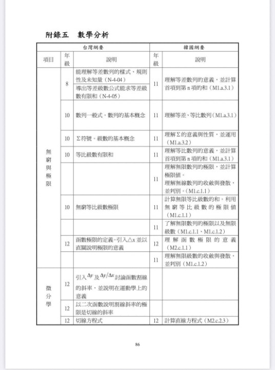
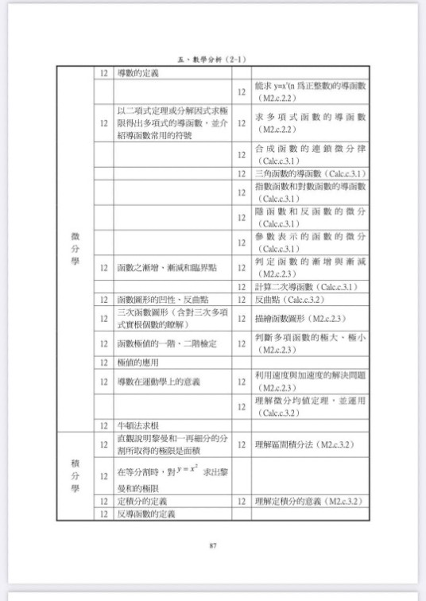
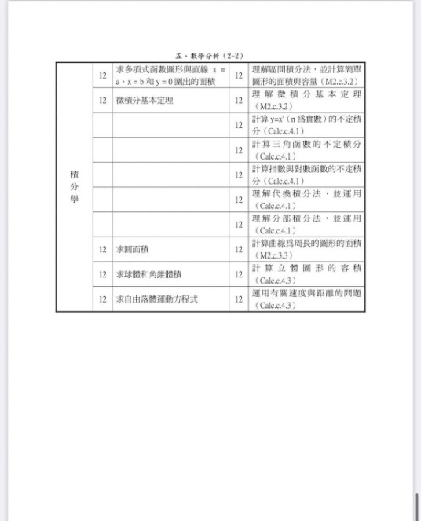

華人數學第一大師—費爾茲獎得主
丘成桐 ：台灣高中微積分學的不夠！
微積分是跨向高等數學的起步，亦是高等科學的基礎！
台灣學生在高三下學期才開始的微積分無論就內容的廣度與深度，不但遠遠落後於歐美（俄國、法國、歐美高中的大學先修課程IB,AP）也差鄰近東亞地區的日本、韓國、大陸，甚至越南一截！
台灣目前高三的微積分只有教授最基本的代數函數：多項式函數。
連最重要的超越函數：指對數函數、三角函數都沒涉及，更遑論極座標的微積分、級數斂散與基本微分方程！
沒有微積分的基礎，使得台灣大多數國高中數理資優生不能像其他先進國家的頂尖學生提早接觸大學以上的科學課程（複變函數、傅立葉級數、機率論、電磁學、熱力學、動力學、相對論、量子力學、AI….)，只能侷限在數學競賽（初等數學）的格局中。
https://www.facebook.com/groups/695697124716309/permalink/790015251951162/
參與IPhO(物奧)的選手在複賽之後的賽題，常需要用到基礎的微分方程，但現行的課程付之闕如！
高三課程除了微積分內容太少太淺，還有一個長久以來被詬病的現象：因爲學測完全不考，許多忙於申請大學的同學對於高三下學期的微積分，已無心或無力認真學習。
缺乏良好的基礎，使得今天台灣許多大學，大一的微積分授課進度緩慢且深度受限（連頂大都不能倖免！ 在此不舉例了 免得得罪學校…）。
另外許多靠著刷考古題、背誦題型來應付AP,IB的國際學校學生，入學後才發現自己的數學程度無法與大學專業課程順利接軌，必須重新回頭亡羊補牢，甚至考慮轉系（我們碰過不少這樣的例子）！
提升台灣學子的數學程度與視野，讓頂尖的孩子在全球化的舞台上具有國際競爭力，是獵豹的願景與當仁不讓的使命！
獵豹「中學生的高等數學系列」將在今年暑假首先推出一年制的微積分課程（111/7～112/6），由經驗豐富的青昀老師（台大博士）與誠聰老師（交大博士候選人）擔綱教學，歡迎數學菁英們一起加入獵豹的學習行列！
https://www.facebook.com/groups/695697124716309/permalink/1041227443496607/
台灣學生在高三下學期才開始的微積分無論就內容的廣度與深度，不但遠遠落後於歐美（俄國、法國、歐美高中的大學先修課程IB,AP）也差鄰近東亞地區的日本、韓國、大陸，甚至越南一截！
台灣目前高三的微積分只有教授最基本的代數函數：多項式函數。
連最重要的超越函數：指對數函數、三角函數都沒涉及，更遑論極座標的微積分、級數斂散與基本微分方程！
沒有微積分的基礎，使得台灣大多數國高中數理資優生不能像其他先進國家的頂尖學生提早接觸大學以上的科學課程（複變函數、傅立葉級數、機率論、電磁學、熱力學、動力學、相對論、量子力學、AI….)，只能侷限在數學競賽（初等數學）的格局中。
https://www.facebook.com/groups/695697124716309/permalink/790015251951162/
參與IPhO(物奧)的選手在複賽之後的賽題，常需要用到基礎的微分方程，但現行的課程付之闕如！
高三課程除了微積分內容太少太淺，還有一個長久以來被詬病的現象：因爲學測完全不考，許多忙於申請大學的同學對於高三下學期的微積分，已無心或無力認真學習。
缺乏良好的基礎，使得今天台灣許多大學，大一的微積分授課進度緩慢且深度受限（連頂大都不能倖免！ 在此不舉例了 免得得罪學校…）。
另外許多靠著刷考古題、背誦題型來應付AP,IB的國際學校學生，入學後才發現自己的數學程度無法與大學專業課程順利接軌，必須重新回頭亡羊補牢，甚至考慮轉系（我們碰過不少這樣的例子）！
提升台灣學子的數學程度與視野，讓頂尖的孩子在全球化的舞台上具有國際競爭力，是獵豹的願景與當仁不讓的使命！
獵豹「中學生的高等數學系列」將在今年暑假首先推出一年制的微積分課程（111/7～112/6），由經驗豐富的青昀老師（台大博士）與誠聰老師（交大博士候選人）擔綱教學，歡迎數學菁英們一起加入獵豹的學習行列！
https://www.facebook.com/groups/695697124716309/permalink/1041227443496607/


